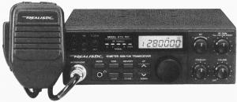

Realistic HTX-100 10-meter Transceiver
- Transmits and receives USB and CW from 28.0 - 29.7 MHz
- output power: 5 and 25 watts
- Includes noise blanker, RIT and 10 channel memory
Intended for use by entry-level hams back when entry-level still
meant 5 WPM Morse Code. Unlike Radio Shack's newer entry into
the 10-meter market, this radio lets you do CW.
Right now this radio is idle, but I soon hope to have it in my car
taking advantage of the good ground wave propagation properties of
the 10-meter band.